Giới thiệu
-
Trong công việc hàng ngày, nhiều lúc chúng ta cần chuyển đổi văn bản từ các file dạng word, excel, powerpoint,.. sang định dạng pdf. Văn bản pdf là viết tắt của Portable Docunment Format là một định dạng tập tin văn bản tài liệu khá phổ biến của hãng Adobe System, pdf hỗ trợ văn bản thô (text) với rất nhiều kiểu chữ khác nhau, hình ảnh đồ họa đa dạng, âm thanh cùng với rất nhiều các hiệu ứng văn bản khác.
-
Hiện nay đã có rất nhiều hình thức, công cụ để chuyển đổi các định dạng word, excel, powerpoint,.. sang định dạng pdf, bạn có thể chuyển đổi trực tuyến hoặc sử dụng phần mềm hỗ trợ. Tuy nhiên, để hiểu hơn về cách ứng dụng hoạt động, mình sẽ xây dựng một ứng dụng đơn giản, thực hiện việc chuyển đổi các định dạng văn bản như word, excel, powerpoint,.. sang định dạng pdf.
Tổng quan ứng dụng
-
Cụ thể, về mặt ngôn ngữ mình dùng Python (Python 2.7) để phát triển phần ứng dụng phía backend, framework dùng cho web service là Flask, một python web micro-framework. Flask rất đơn giản, giúp cho người mới học dễ tiếp cận và có thể xây dựng website một cách nhanh chóng. Flask đưa ra cho người phát triển những thứ thực sự cần thiết để xây dựng một web api và khả năng mở rộng để có thể kết hợp với các thư viện bên ngoài vì vậy người phát triển cũng hiểu rõ ứng dụng của mình hơn do họ phải tự quản lý những thư viện, gói phần mềm nào cần thiết phải đưa vào ứng dụng.
-
Áp dụng kiến trúc microservices làm kiến trúc chung của hệ thống. Viết unittest để kiểm tra kiến trúc nội tại của chương trình, các chức năng riêng rẽ hoạt động đúng hay không. Dùng docker để đóng gói và cài đặt môi trường cho ứng dụng.
-
Dùng thư viện unoconv (Universal Office Converter) là một công cụ dòng lệnh cho phép chuyển đổi bất kỳ định dạng file nào (doc, docx. odt, ods, xls, xlsx) mà LibreOffice hỗ trợ thành bất kỳ các định dạng file như xml, pdf, doc, docx odt, ods, xls, xlsx,..
Xây dựng web API
- Cấu trúc thư mục mã nguồn của ứng dụng như sau:
├── app
│ ├── app.py
│ ├── app.yaml
│ ├── config.py
│ ├── docker-compose.yml
│ ├── Dockerfile
│ ├── __init__.py
│ ├── requirements.txt
│ ├── resources
│ │ ├── __init__.py
│ │ └── upload.py
│ └── test_resources.py
└── README.md
-
Thư mục app chứa các mô-đun khác nhau nhưng được liên kết với nhau của ứng dụng, requirements.txt chứa các gói phụ thuộc phần mềm cho ứng dụng.
-
Trước khi client tải file lên server thì các file được tải lên phải đảm bảo đúng định dạng, kiểu file được quy định trong tệp tin cấu hình mà người phát triển quy định trong file config.py
import os
import yaml
import sys
with open("app.yaml", "r") as stream:
try:
config = yaml.load(stream)
except Exception as e:
sys.exit(str(e))
def _get_config_value(key, default_value):
return os.environ.get(key, config.get(key, default_value))
class BaseConfig(object):
UPLOAD_FOLDER = _get_config_value("UPLOAD_FOLDER", "upload")
CONVERT_FOLDER = _get_config_value("CONVERT_FOLDER", "convert")
MAX_CONTENT_LENGTH = _get_config_value("MAX_CONTENT_LENGTH", 52428800)
ALLOWED_EXTENSIONS = _get_config_value(
"ALLOWED_EXTENSIONS", ["txt", "docx", "doc", "xls", "xlsx", "pptx"]
)
- Các kiểu định dạng đúng quy định là "txt", "docx", "doc", "xls", "xlsx", "pptx" được lấy từ file cấu hình tùy chỉnh app.yaml
YAML là gì ?
-
Có thể thấy đuôi của file này là yaml, đây là một ngôn ngữ tuần tự hóa dữ liệu (data serialization language), được thiết kế với mục đích giúp con người cũng như các ngôn ngữ lập trình hiện đại dễ đọc và dễ xử lý trong các tác vụ thường ngày. Tương tự với các ngôn ngữ tuần tự dữ liệu khác như XML, JSON, CSV, BSON,… YAML được sử dụng để biểu diễn dữ liệu dưới dạng text. YAML thường được sử dụng cho các file cấu hình (configuration files), nhưng cũng có thể được sử dụng cho những mục đích khác như lưu các file log,..
-
Các file được viết bằng YAML có phần đuôi mở rộng là .yaml hoặc .yml
-
Có cú pháp giống của Python, YAML yêu cầu thụt đầu dòng trước mỗi câu, thụt đầu dòng bởi các dấu cách (không dùng tab).
-
Dùng dấu # để bắt đầu comment.
-
Dấu "-" để bắt đầu cho 1 list các phần tử.
-
Tham khảo thêm về cú pháp khác ở đây.
-
File cấu hình app.yaml
UPLOAD_FOLDER: 'upload'
CONVERT_FOLDER: 'convert'
MAX_CONTENT_LENGTH: 52428800
ALLOWED_EXTENSIONS:
- 'txt'
- 'docx'
- 'doc'
- 'xls'
- 'xlsx'
- 'pptx'
- Quy định:
- UPLOAD_FOLDER là nơi lưu trữ file tải lên.
- CONVERT_FOLDER là nơi lưu các file đã được chuyển đổi.
- MAX_CONTENT_LENGTH là kích thước tối đa file được tải lên.
- ALLOWED_EXTENSIONS là các định dạng file được phép tải lên.
Luồng xử lý của hệ thống
- B1. Client tải (upload) file lên phía server cùng theo yêu cầu chuyển đổi định dạng.
- B2. Web server nhận file và yêu cầu từ phía client, kiểm tra định dạng file tải lên, nếu file đúng định dạng quy định trong file cấu hình thì thực hiện tiếp B3, nếu không thì gửi phản hồi cho client.
- B3. Tạo thư mục upload và chuyển file đúng định dạng cần chuyển đổi vào đây.
- B4. Web server thực hiện việc chuyển đổi định dạng file sang pdf và lưu file đã chuyển đổi vào folder convert.
- B5. Gửi phản hồi cho client biết việc chuyển đổi đã thành công.
- Luồng xử lý chính của hệ thống được code trong file resources/upload.py, mỗi bước như trên sẽ được thực hiện trong một hàm tương ứng. Từ bước 1 tới bước 5 ứng dụng sẽ có các hàm tương ứng là upload_file, allowed_file, _mkdir_upload_folder, convert_file
Hàm allowed_file
-
Chức năng của hàm này là kiểm tra loại file tải lên bằng cách kiểm phần đuôi mở rộng của nó, trả về thông báo định dạng file hợp lệ hoặc không hợp lệ.
-
Mã nguồn hàm allowed_file
def allowed_file(filename):
"""Docs.
Function check type file
---
tags:
- Checkfile
parameters:
- name: filename
type: string
description: file to upload
responses:
True:
description: valid file format
Fasle:
description: invalid file format
"""
return (
"." in filename
and filename.split(".")[-1].lower() in BaseConfig.ALLOWED_EXTENSIONS
)
Hàm _mkdir_upload_folder
-
Đầu vào của hàm này là một biến đường dẫn thư mục được cấu hình trong file cấu hình. Hàm này có chức năng tạo ra thư mục chứa các file ban đầu được upload theo cấu trúc /upload/year/month/day/example.docx nhằm để quản lý các file dễ dàng hơn.
-
Mã nguồn hàm _mkdir_upload_folder
def _mkdir_upload_folder(upload_path):
""" Create folder upload
"""
try:
os.makedirs(upload_path)
return True, upload_path
except OSError as e:
if e.errno == errno.EEXIST:
return True, upload_path
else:
return False, str(e)
except Exception as e:
return False, str(e)
Hàm convert_file
- Hàm này nhận biến đầu vào là đường dẫn của file cần chuyển đổi, sử dụng thư viện unoconv mà phần giới thiệu mình có nhắc tới để chuyển đổi sang định dạng pdf, cú pháp dòng lệnh có dạng:
cmd = "unoconv -f pdf --output=" + file_output_path + " " + file_path
-
Dòng lệnh trên sẽ dựa vào đường dẫn đến file người dùng tải lên nằm trong thư mục upload, dùng thư viện unoconv chuyển đổi sang định dạng pdf và lưu file đã được chuyển đổi định dạng sang thư mục convert.
-
Mã nguồn của hàm này như sau:
def convert_file(file_path):
"""Docs.
# Author: Toannd
# Function: Converting files using unoconv
---
tags:
- convert
parameters:
- name: filename
type: string
description: file to convert
response:
path to file convert with origin name
"""
convert_folder = os.path.join(BaseConfig.CONVERT_FOLDER)
file_name = (
file_path.rsplit("/", 1)[1][: file_path.rsplit("/", 1)[1].rindex(".")] + ".pdf"
)
print(file_name)
file_output_path = (
os.path.join(os.getcwd() + "/") + convert_folder + "/" + file_name
)
cmd = "unoconv -f pdf --output=" + file_output_path + " " + file_path
_r = os.system(cmd)
if int(_r) == 0:
return True, file_name
return False, ""
Hàm upload_file
-
Chức năng của hàm này là upload file bằng hai phương thức POST hoặc GET, đây là hai phương thức HTTP thông dụng.
-
Với phương thức POST người dùng sẽ tải file từ máy tính của mình lên server, server nhận file và tiến hành kiểm tra định dạng file mới tải thông qua hàm allowed_file, nếu file đúng định dạng quy định thì tạo thư mục upload và chuyển file cần chuyển đổi vào đây. Nếu file không đúng định dạng thì trả về thông báo lỗi cho người dùng vui lòng tải lên file đúng định dạng.
if request.method == "POST":
""" Handle file via POST
- Get file upload via payload
- Download file to folder upload
"""
if "file" not in request.files:
return (
json.dumps(
{"status": "400", "message": u"Truyền file chưa đúng tham số "}
),
400,
)
file = request.files["file"]
if file and allowed_file(file.filename):
filename = secure_filename(file.filename)
ok, upload_path = _mkdir_upload_folder(upload_path)
if not ok:
return json.dumps({"status": "500", "message": u"Lỗi hệ thống"}), 500
file_path = os.path.join(upload_path, filename)
try:
file.save(file_path)
except Exception as e:
return (
json.dumps(
{
"status": "500",
"message": u"Lỗi hệ thống, không thể upload file",
}
),
500,
)
else:
return (
json.dumps(
{
"status": "404",
"message": "vui lòng tải lên file đúng định dạng ({})".format(
(", ").join(BaseConfig.ALLOWED_EXTENSIONS)
),
}
),
404,
)
- Với phương thức GET người dùng sẽ tải file qua tham số trên url, file được tải cần chuyển đổi là một đường dẫn trực tiếp đến tệp tin trên internet như đơn xin hoãn thi
http://home.actvn.edu.vn/Upload/document/don-hoan-thi.docx
- Server nhận file và tiến hành kiểm tra định dạng file theo phần mở rộng của file theo đường dẫn, như ví dụ trên thì server sẽ tách lấy phần tên của file sau ký tự "/" đầu tiên tính từ phải sang là don-hoan-thi.docx bằng dòng code sau với file_name_origin là tên gốc:
file_name_origin = file_url.rsplit("/", 1)[1]
- Tiếp tục lấy phần đuôi của tên gốc và so sánh với file cấu hình:
if file_name_origin.split(".")[-1].lower() in BaseConfig.ALLOWED_EXTENSIONS:
- Nếu file upload đúng định dạng thì kiểm tra tên file có chứa ký tự trống hay không vì một số trường hợp đặc biệt tên file chứa ký tự trống như don hoan thi.docx thì việc chuyển đổi ở các bước sau sẽ không thực hiện được, vì vậy để chắc chắn mình sẽ dùng regex bắt các trường hợp có thể xảy ra bằng cách đưa ra điều kiện nếu tên file chứa khoảng trắng thì mình sẽ thay thế khoảng trắng bằng một dấu nối "-"
if re.search(r"\s", file_name_origin):
name_extension = file_name_origin.split(".")[-1]
file_name_edit = (
(file_name_origin[: file_name_origin.rindex(".")]).replace(
" ", "-"
)
+ "."
+ name_extension
)
file_path = upload_path + "/" + file_name_edit
else:
file_path = upload_path + "/" + file_name_origin
- Không phải lúc nào mọi chuyện cũng diễn ra êm đẹp, khi gặp phải trường hợp người dùng tải file qua tham số trên url như dạng đường dẫn không hiển thị đuôi mở rộng này
http://sepon.com.vn/Download.aspx?id=9
-
Nếu không thay đổi gì về code mà vẫn để server tiến hành kiểm tra định dạng file theo phần mở rộng của file thì chắc chắn sẽ không đạt được yêu cầu từ phía người dùng. Theo trình tự server sẽ tách lấy phần tên của file sau ký tự "/" đầu tiên tính từ phải sang là Download.aspx?id=9 và tiến hành kiểm tra phần đuôi mở rộng sau ký tự "." đầu tiên từ phải sang là aspx?id=9 với file cấu hình, dĩ nhiên là phần mở rộng này không nằm trong file cấu hình, server sẽ bỏ qua phần việc chuyển đổi và trả cho người dùng một thông báo vui lòng tải lên file đúng định dạng.
-
Vậy cần phải thêm một trường hợp để kiểm tra các dạng đường dẫn như vậy, đối với các loại file có phần mở rộng không nằm trong file cấu hình
if file_url.split(".")[-1] not in BaseConfig.ALLOWED_EXTENSIONS:
-
Mình sẽ đi phân tích HTTP header để lấy ra một vài thông tin cần thiết. HTTP header là phần đầu của HTTP trong mỗi request mà client gửi tới server cũng như response của server gửi về cho client. Mỗi khi truy cập vào một url thì chúng ta sẽ thực hiện gửi và nhận nhiều HTTP request nên đồng thời cũng gửi và nhận nhiều HTTP header kèm theo. HTTP header chứa thông tin chủ yếu về client và server. Cụ thể là thông tin của trình duyệt, thông tin cấu hình server, ngày tháng, thông tin về request page, kiểu dữ liệu truyền tải,.. Thông qua Content-Disposition mình sẽ lấy được file name của file tải lên từ đó tiến hành tải file xuống thư mục upload và lặp lại các bước tiếp theo như trường hợp mình nêu ra ở bên trên.
-
Sau khi trải qua hết các bước kiểm tra file đầu vào thì tiến hành chuyển đổi định dạng file sang pdf thông qua hàm convert_file, sau đó thực hiện chức năng xem trước (preview) hiển thị file đã chuyển đổi ngay trên trình duyệt:
ok, file_name = convert_file(file_path)
file_path_convert = os.path.join(os.getcwd(), BaseConfig.CONVERT_FOLDER, file_name)
with open(file_path_convert) as f:
file_content = f.read()
response = make_response(file_content)
response.headers["Content-Disposition"] = "inline; filename={}".format(file_name)
response.headers["Content-Type"] = "application/pdf"
return response
-
Content-Disposition là một thông tin trên phần HTTP header của response, nó cho biết nội dung dự kiến sẽ được hiển thị trên trình duyệt. Với inline nội dung sẽ hiển thị tự động.
-
Content-Type giúp trình duyệt biết được nội dung này có thể mở bằng ứng dụng nào, và gợi ý người dùng mở bằng một chương trình có sẵn trên máy tính của họ khi nội dung đã download thành công.
Test API bằng POSTMAN
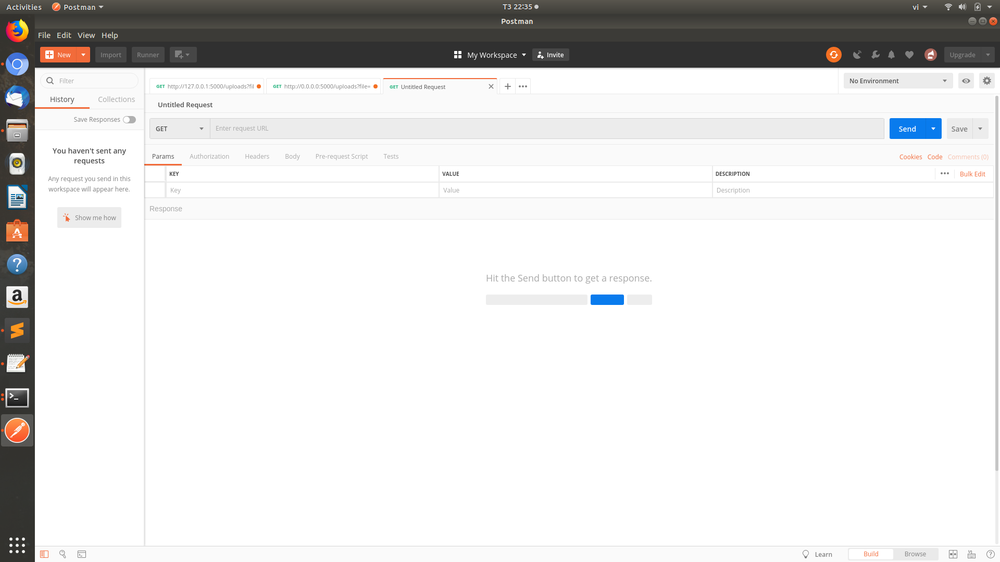
Giới thiệu
-
Sau khi đã xây dựng được một web API thì cần phải kiểm tra nó hoạt động có như mong đợi hay không, nếu có thì tốt nếu không thì lại đi fix bug tiếp. Việc dùng code gọi các API và test kết quả trả về khá tốn công. Vì vậy mình xin giới thiệu một công cụ mình hay dùng khi làm việc với RESTful API là POSTMAN.
-
POSTMAN là một công cụ cho phép chúng ta làm việc với API. Với Postman, ta có thể gọi API mà không cần viết dòng code nào.
-
POSTMAN hỗ trợ tất cả các phương thức HTTP (GET, POST, PUT, PATCH, DELETE, ...).
-
POSTMAN cho phép lưu lại lịch sử các lần request.
Test API
-
Việc sử dụng POSTMAN rất đơn giản. Bạn chỉ cần chọn method, điền URL, thêm các thông tin cho body, header trong những trường hợp cần thiết, rồi nhấn SEND và chờ kết quả trả về.
-
Bắt đầu chạy ứng dụng: 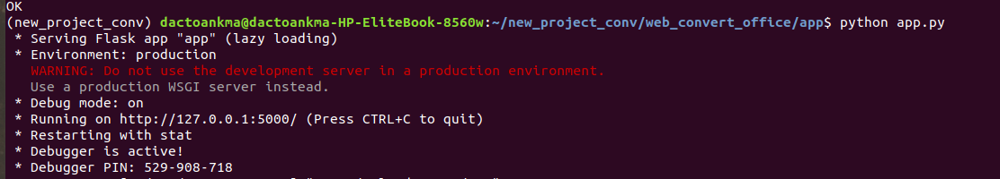
-
Đầu tiên mình sẽ tiến hành kiểm tra upload file bằng phương thức POST 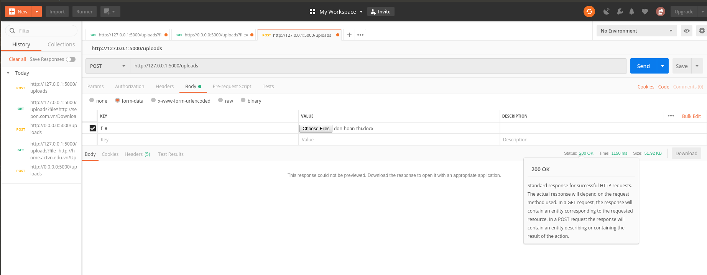
-
Với method POST (hoặc PUT) bạn cần phải thêm nội dung vào body để gửi request, response status code phản hồi từ server là 200, thành công, kiểm tra trong thư mục convert đã tồn tại file vừa được chuyển đổi 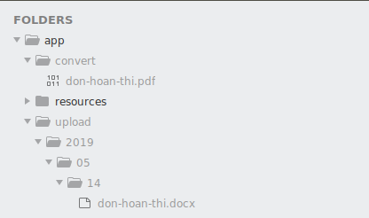
-
Kiểm tra với trường hợp tải lên file không đúng định dạng: 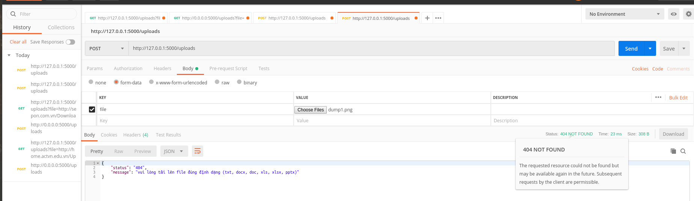
-
Trường hợp truyền file nhưng không đúng tham số trong phần body hoặc quên không chọn file upload mà vẫn bấm SEND: 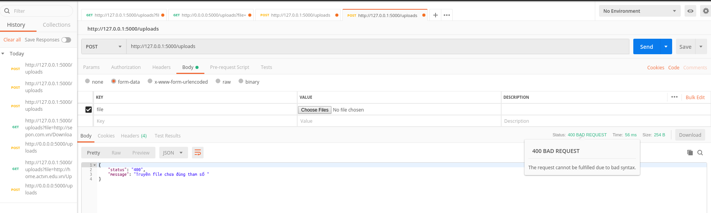
-
Bây giờ mình tiến hành kiểm tra upload file bằng phương thức GET 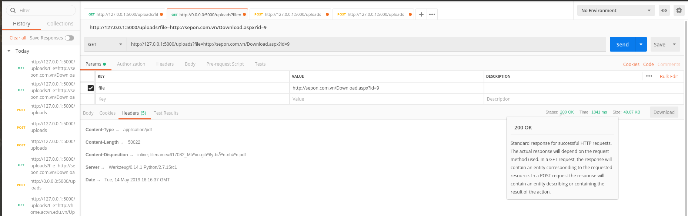
-
Kiểm tra thấy file đã tồn tại trong thư mục: 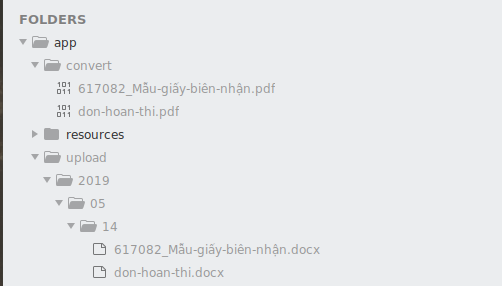
-
Xem trước file trên trình duyệt: 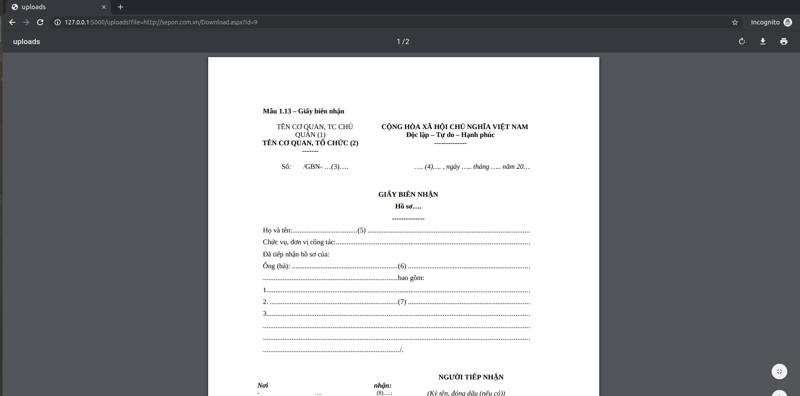
-
Với các trường hợp truyền file không đúng tham số, tải lên file không đúng định dạng quy định đều nhận được phản hồi từ phía hệ thống để phía người dùng điều chỉnh cho đúng yêu cầu.
Viết unit test
-
Unit test là một phần không thể thiếu của một ứng dụng, trong bài viết trước đây mình đã viết một bài unit test cơ bản trong đó trình bày về khái niệm, đặc điểm, lợi ích của unit test và ví dụ minh họa về thư viện unit test trong python. Ở bài viết này mình sẽ không đi sâu về unit test mà chỉ tập trung vào việc mình sẽ test cái gì trong ứng dụng mà mình đang đề cập tới.
-
File test_resources.py chứa code test các hàm của ứng dụng lần lượt là test hàm tạo thư mục upload theo cấu trúc year/month/day, hàm kiểm tra phần mở rộng của file tải lên, hàm chuyển đổi định dạng file sang pdf tương ứng với ba lớp TestFolderMkdir, TestAllowedFile, TestConvertFile
Mã nguồn:
import unittest
import os
import shutil
import tempfile
import datetime
from config import BaseConfig
from resources.upload import _mkdir_upload_folder, allowed_file, convert_file
class TestFolderMkdir(unittest.TestCase):
def setUp(self):
self.path = tempfile.mkdtemp()
def tearDown(self):
shutil.rmtree(self.path)
def test_mkdir_upload_folder(self):
upload_path = os.path.join(
self.path, str(datetime.date.today().strftime("%Y/%m/%d"))
)
result, folder_path = _mkdir_upload_folder(upload_path)
self.assertTrue(result)
self.assertEqual(folder_path, upload_path)
class TestAllowedFile(unittest.TestCase):
def test_type_file(self):
self.assertFalse(allowed_file("test"))
self.assertFalse(allowed_file("test.img"))
self.assertTrue(allowed_file("test.doc"))
self.assertTrue(allowed_file("test.DoC"))
class TestConvertFile(unittest.TestCase):
def setUp(self):
self.tempdir = tempfile.mkdtemp()
def test_convert_file(self):
file_path = os.path.join(self.tempdir, "test.txt")
f = open(file_path, "w")
f.write("test create file txt and convert to pdf")
f.close()
f = open(file_path)
self.assertEqual(f.read(), "test create file txt and convert to pdf")
result, file_convert = convert_file(file_path)
self.assertTrue(file_convert, file_path)
def tearDown(self):
shutil.rmtree(self.tempdir)
shutil.rmtree(os.path.join(os.getcwd(), BaseConfig.CONVERT_FOLDER))
if __name__ == "__main__":
unittest.main()
-
unittest.TestCase được sử dụng để tạo các trường hợp thử nghiệm, testcase được tạo ra bằng cách kế thừa unittest.TestCase
-
Phương thức setUp() và tearDown() cho phép định nghĩa hướng dẫn sẽ được thực hiện trước và sau mỗi phương thức test. Ở đây setUp() dùng để khởi tạo thư mục cho việc test và tearDown() dọn dẹp sau khi đã test xong.
-
Chạy tập lệnh cho kết quả: 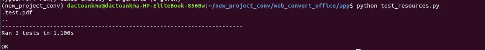
-
Kết quả thử nghiệm nếu tất cả các trường hợp kiểm tra được thông qua, đầu ra cho thấy OK.
Triển khai ứng dụng với docker
-
Docker giúp xây dựng được một cơ chế ảo hóa, mục đích là tạo ra một môi trường riêng biệt (hệ điều hành, phần mềm…) để dễ quản lý, bảo trì, di chuyển các phần mềm, code đã được đóng gói.
-
Trong phạm vi bài viết này, mình không đi sâu về khái niệm, đặc điểm,.. của docker mà chỉ tập trung vào việc xây dựng docker cho ứng dụng mình đang nói tới.
-
Trước tiên bạn phải cài đặt docker, hiện tại mình sử dụng ubuntu 18.04, phiên bản docker hiện tại của mình là Docker version 18.09.6, build 481bc77
Tạo Dockerfile
-
Docker sẽ xây dựng (build) docker image một cách tự động bằng cách đọc các chỉ thị (instruction) đã được khai báo trong một file có tên là Dockerfile. Dockerfile là một tập tin dạng text chứa một tập các câu lệnh để tạo mới một Image trong Docker.
-
Tạo một tệp Dockerfile trong thư mục gốc của ứng dụng và thêm dòng FROM ngay dòng đầu tiên:
FROM python:2
-
Điều này cho Docker biết rằng chúng ta muốn bắt đầu từ image python chính thức với phiên bản 2.
-
Dùng RUN để update ubuntu software bên trong Dockerfile và tiến hành cài đặt các phụ thuộc cho ứng dụng:
RUN apt-get update -y && \
apt-get install -y python-pip python-dev unoconv libreoffice-script-provider-python \
&& apt-get clean \
&& apt-get autoremove -y \
&& rm -rf /var/lib/apt/lists/*
RUN pip install -r requirements.txt
- Chỉ thị ADD sẽ copy thư mục từ vị trí thư mục đang build trên local client hoặc remote files url và thêm chúng vào file hệ thống của image:
ADD . /conv
- Tiếp theo, mình sẽ đặt thư mục /conv trong Dockerfile:
WORKDIR /conv
- Định nghĩa những command mặc định, chuẩn bị các điều kiện setup cần thiết để chạy service trong container:
ENTRYPOINT gunicorn -w 4 -b 0.0.0.0:5000 app:server
- Nội dung Dockerfile sau khi đã hoàn thành:
FROM python:2
RUN apt-get update -y && \
apt-get install -y python-pip python-dev unoconv libreoffice-script-provider-python \
&& apt-get clean \
&& apt-get autoremove -y \
&& rm -rf /var/lib/apt/lists/*
ADD . /conv
WORKDIR /conv
RUN pip install -r requirements.txt
ENTRYPOINT gunicorn -w 4 -b 0.0.0.0:5000 app:server
Build docker image
- Chạy command sau để build image từ Dockerfile đã được tạo ở trên:
docker build -t toannd/conv .
-
Câu lệnh trên sẽ tạo ra 1 image mới có tên là toannd/conv. Sau khi câu lệnh hoàn tất, trên màn hình sẽ hiển thị 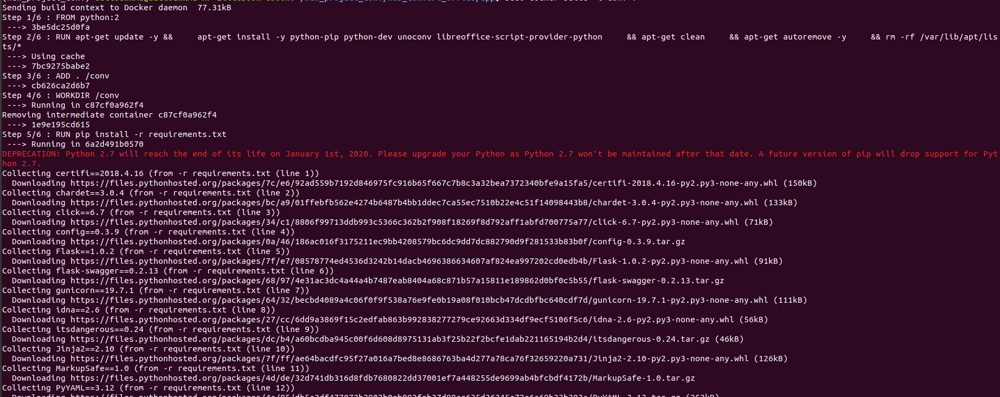 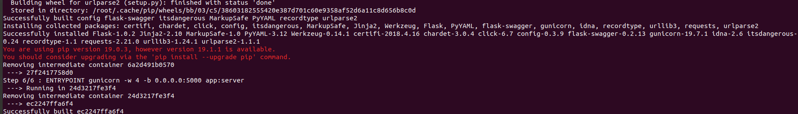
-
Tiến hành kiểm tra image bằng lệnh:
docker images
-
Kết quả thu được: 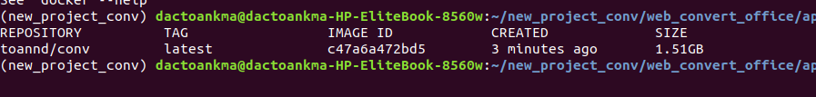
-
Như vậy là mình đã build thành công 1 Docker image. Bây giờ mình chạy image đó, dùng lệnh sau:
docker run toannd/conv
- Kết quả thu được: 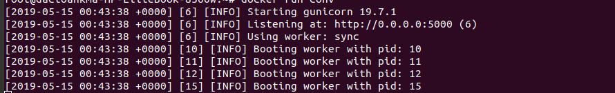
Build docker-compose
-
Như đã biết, mình đã cấu hình và tạo image, các vùng chứa và liên kết chúng với nhau. Nếu bạn làm việc với 2 hoặc 3 container thì nó có thể thực hiện được. Tuy nhiên nếu bạn cần thiết lập môi trường của 1 project với nhiều container chứa hơn thì việc đó sẽ trở nên rất khó khăn bằng cách thiết lập thủ công. Docker-compose sẽ giải quyết vấn đề đó.
-
Docker-compose là 1 công cụ để định nghĩa và chạy nhiều container trên ứng dụng Docker.
-
Docker-compose cho phép bạn tạo một file cấu hình YML, nơi mà bạn sẽ định nghĩa các services trên ứng dụng của bạn và định nghĩa tất cả các bước, cấu hình cần thiết để xây dựng các image, up các container và liên kết chúng với nhau. Cuối cùng, một khi tất cả điều này được thực hiện thì bạn sẽ chỉ cần thiết lập tất cả với một câu lệnh duy nhất.
-
Ứng dụng hiện tại của mình chỉ có duy nhất một services mình đặt tên là conv, sau đây mình sẽ bắt tay vào build docker-compose
-
Trước tiên bạn cần cài đặt docker-compose
-
Phiên bản docker-compose hiện tại của mình là docker-compose version 1.23.2, build 1110ad01
-
Tạo một tệp docker-compose.yml trong thư mục gốc của dự án.
version: '3'
services:
conv:
build: .
volumes:
- ./conv/upload:/conv/upload
- ./conv/convert:/conv/convert
ports:
- '5000:5000'
- File docker-compose.yml được tổ chức gồm 4 phần:
- version là phiên bản của file docker-compose
- services chứa các container với mỗi service là tên của một container
- volumes gắn đường dẫn trên host machine được sử dụng trên container
- networks sử dụng để cấu hình network cho ứng dụng
- Với services có một số thành phần sau:
- build chỉ ra vị trị đường dẫn đặt Dockerfile
- volumes gắn đường dẫn trên host machine được sử dụng trên container
- port kết nối port của máy host đến port của container
- Lưu file docker-compose.yml sau đó chạy lệnh:
docker-compose up
-
Kết quả thu được: 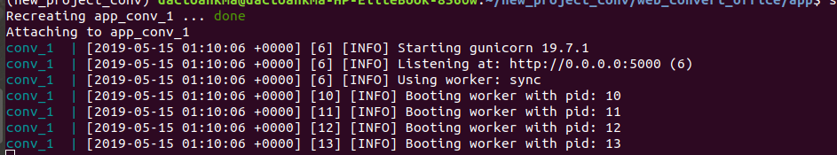
-
Tiến hành kiểm tra upload file bằng phương thức GET, truy cập vào địa chỉ
http://0.0.0.0:5000/uploads?file=http://home.actvn.edu.vn/Upload/document/don-hoan-thi.docx
-
Kết quả hiện ra sẽ là: 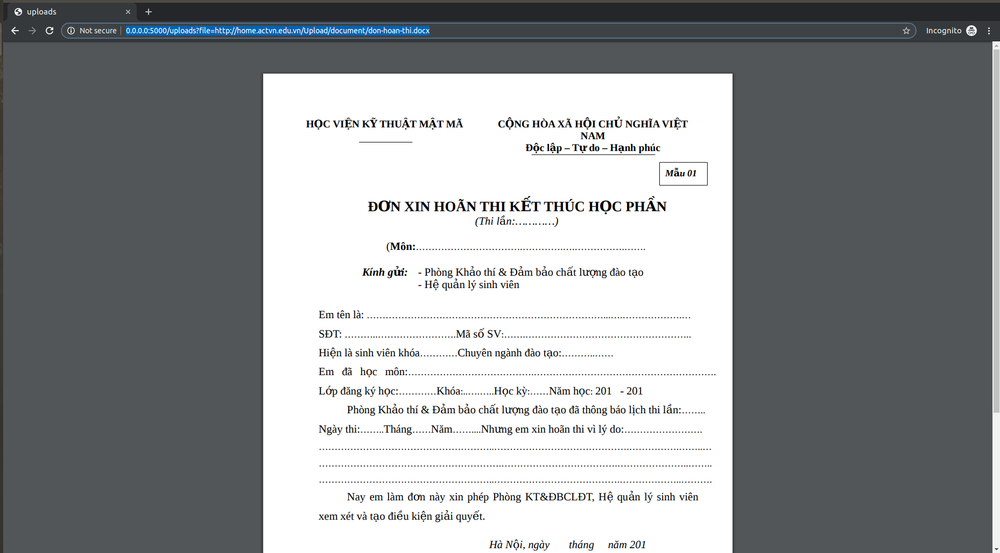
-
Như vậy việc build docker-compose đã thành công, phía server trả về bản xem trước của file đã convert trên trình duyệt.
Push image lên docker hub
-
Docker hub cũng giống như github, cho phép bạn download các docker images khác đã được build từ cộng đồng (public) hoặc nhà phát hành ứng dụng. Bạn cũng có thể đăng ký tài khoản docker hub cá nhân và upload file docker image đã build của bạn lên docker hub để lưu trữ cũng như quản lý image như upload code lên github repository.
-
Đăng nhập vào tài khoản docker hub

-
Để đăng nhập vào hệ thống docker hub trên command thì bạn sử dụng cú pháp sau:
docker login
-
Sau khi chạy lệnh thì command sẽ hiển thị: 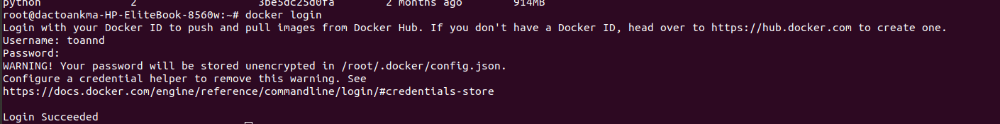
-
Giao diện cơ bản giống github với việc docker hub cho phép tạo repository để upload image lên lưu trữ public/private. 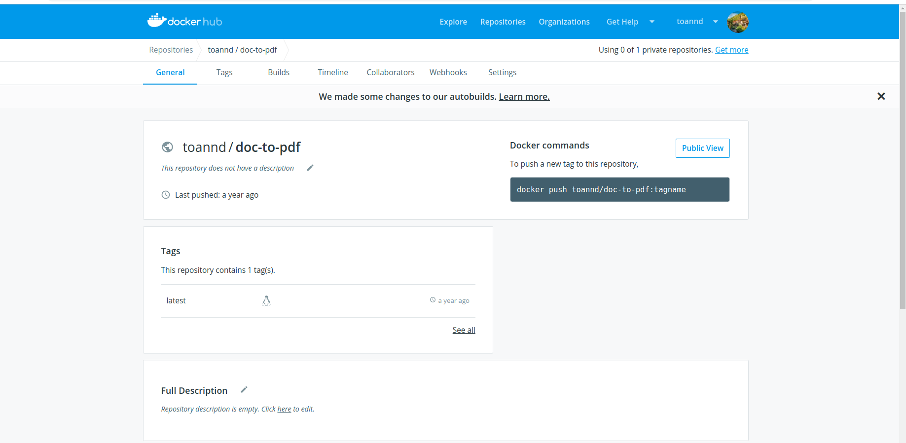
-
Mình sẽ đẩy image lên docker hub bằng cách sử dụng lệnh:
docker push toannd/conv
-
Quá trình đẩy lên docker hub còn phụ thuộc vào tốc độ mạng của bạn:

-
Sau khi đẩy lên docker hub thành công, bạn có thể chia sẻ cho mọi người sử dụng một cách dễ dàng.
-
Mọi người có thể tham khảo mã nguồn ứng dụng trên github của mình.